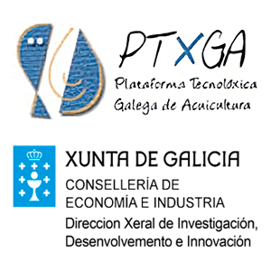
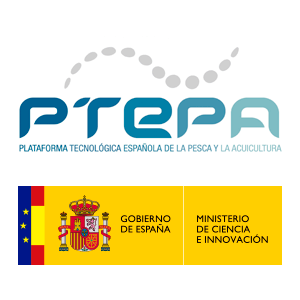
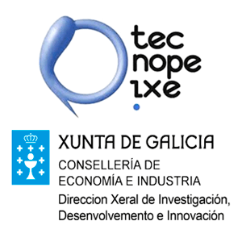
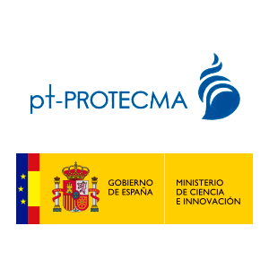
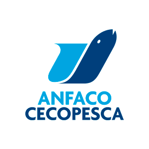

Founded in 2004, Marexi has spent over 20 years developing acoustic, computer vision and microwave technology solutions for the fishing, aquaculture and food processing industries.
Pioneer in automatic species detection on fishing vessels and bycatch reduction — combining acoustic sensing and computer vision with AI classification.
Detection and elimination of parasites (Anisakis and others) and deformity screening in live fry — spanning UV inspection, AI in-line scanning and microwave inactivation.
Modernisation of peeling, sorting and classification processes in food production through real-time computer vision and laser profilometry systems.
Acoustic water tank and hydrostatic pressure cylinder for characterisation and validation of underwater sensors, cameras and electronics up to 100 bar.
R&D project with Pescanova España: computer vision and AI for real-time, in-line detection of Anisakis larvae in industrial cod processing.
Marexi innovation plan co-financed by the European Regional Development Fund (procedure IN848D).
Technology-based participation project that turns recreational divers into active sensors and scientific observers.
Automated tuna peeling system combining computer vision, 3D surface mapping and precision robotics.
Industrial system for the automated peeling of frozen fish.
On-board inspection system that detects and classifies tuna species on the fish deck of tuna vessels.
Computer vision system to control turbot size grading, combined with laser marking, for aquaculture farms.
New scientific evidence and technology to detect, control and mitigate the impact of parasites in fishery products.
Real-time global information system for the fishing industry to manage discards efficiently and add value to them for the food and pharmaceutical industries.
Pilot study for a technological early-warning service for parasitosis at source in commercial fisheries.
State-of-the-art real-time control and monitoring system for trawl nets.
Recovery and recycling of solid waste generated by fishing and port activity.
Technological innovations for fishing gear to reduce catches of unwanted marine species.
Technologies to improve water-quality control and monitoring, and the prevention, prediction, control and mitigation of marine pollution.
Devices that emit compressed-air bubbles to create underwater barriers that prevent accidental capture in fishing nets.
Autonomous buoy recording underwater and airborne sound at marine-mammal frequencies, with real-time processing and data transmission.
Passive 3D-localisation sonar to detect cetaceans and prevent collisions between ships and cetaceans.
Compact instrument for acoustic stimulation and reading of brain responses in stranded dolphins.

Galician Aquaculture Technology Platform. Xunta de Galicia / EU.

Spanish Technology Platform for Fishing and Aquaculture.

Galician Fishing Technology Platform. Xunta de Galicia / EU.

Spanish Platform for Coastal & Marine Protection.

National Association of Fish & Seafood Canners.